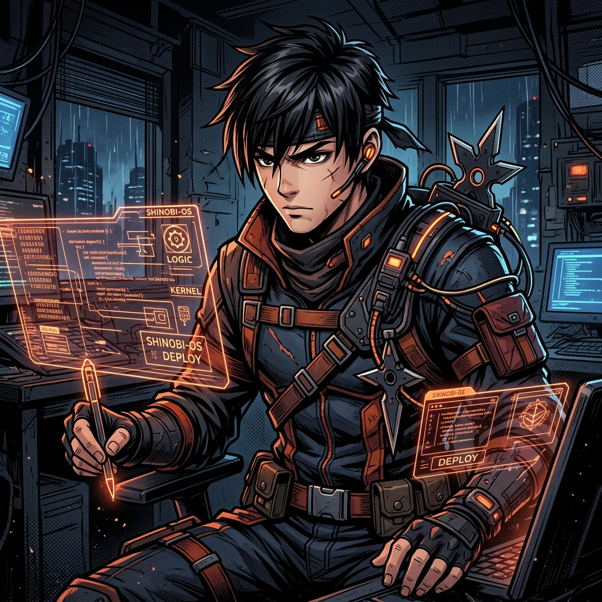

Dossier Confidentiel
Ikoule Japhet
Localisation
Village Caché du Code (France)
Spécialité
Développeur Full Stack
Niveau
Initié (Junior)
Affinité
Linux, Cloud, IA
Objectif Personnel
"Maîtriser les arcanes de l'Administration Système (Linux), sceller la puissance des conteneurs (Docker) et comprendre les esprits artificiels (Ollama) pour devenir un Ingénieur DevOps complet."
Arsenal Secret
Mes Techniques
Technique du Front-End
Technique du Back-End
Technique des Systèmes
Technique de l'IA
Registre Officiel
Missions Accomplies
Données extraites des archives GitHub
Recherche de parchemins de mission...
Chronologie
La Voie du Shinobi
Premières lignes de code
Découverte des fondations : HTML, CSS et JavaScript. Le début de l'entraînement.
Maîtrise du Back-End (PHP & BD)
Manipulation des données avec PostgreSQL et MongoDB. Création de systèmes robustes.
La voie du Système (Linux & Docker)
Immersion dans l'administration système. Conteneurisation des applications pour garantir leur stabilité sur tous les terrains.
L'Éveil à l'Intelligence Artificielle
Intégration d'Ollama et de modèles locaux pour créer des systèmes intelligents et autonomes.